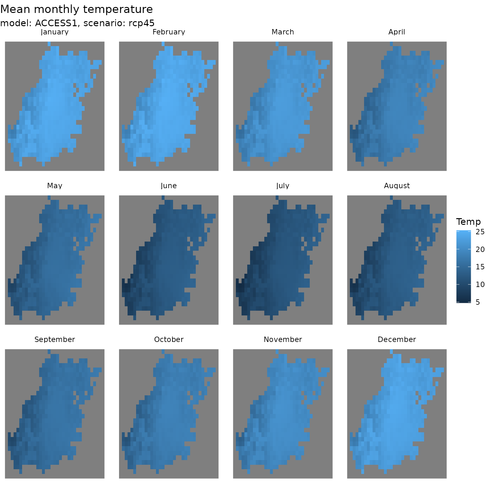
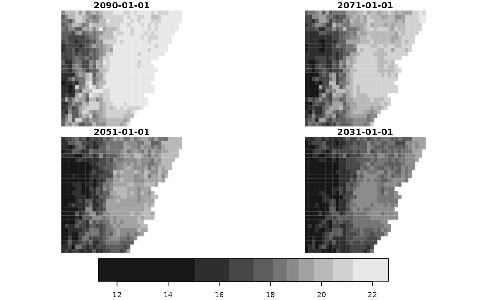
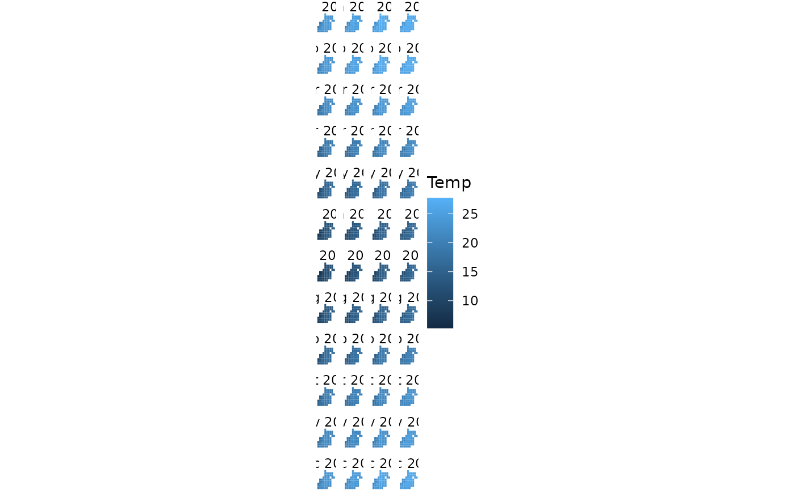
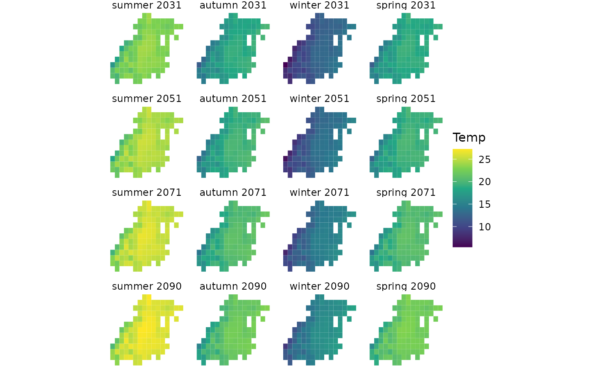

Explore application ready aggregated data - Grid of points
Application-ready-aggregated-data-grid-of-point.Rmd
library(climateChangeInAustralia)
library(stars)
#> Loading required package: abind
#> Loading required package: sf
#> Linking to GEOS 3.10.2, GDAL 3.4.1, PROJ 8.2.1; sf_use_s2() is TRUE
library(sf)
library(dplyr)
#>
#> Attaching package: 'dplyr'
#> The following objects are masked from 'package:stats':
#>
#> filter, lag
#> The following objects are masked from 'package:base':
#>
#> intersect, setdiff, setequal, union
library(tidyr)
library(forcats)
library(ggplot2)
library(units)
#> udunits database from /usr/share/xml/udunits/udunits2.xmlApplication ready aggregated
See introduction to application ready data. The aggregated files contain Monthly, seasonal and annual data as time-series. They contain a single time value per range period (e.g. 2016-2045 has only 2031-01-01) per grid point (lat/lon), and then model values for monthly, seasonal and annual data (the remaining ‘columns’)
A small download
Here we will download Mean_Temperature for
2016-2045 for ACCESS1-0 and
rcp45, and then constrain to the the the Greater Sydney
Area bounding box using the included data object
greater_sydney_boundary
Get the boundary information.
# greater_sydney_boundary
load(system.file(package = 'climateChangeInAustralia', 'greater_sydney_boundary.rda'))
greater_sydney_boundary_bbox <-
sf::st_bbox(greater_sydney_boundary)Download the data. Note how the datetime_start have no effect …
ccia_dataset_urls <- ccia_dataset_urls()
dataset_url <-
ccia_dataset_urls$
application_ready_aggregated$
Mean_Temperature$
`2016-2045`$
`tas_aus_ACCESS1-0_rcp45_r1i1p1_CSIRO-MnCh-wrt-1986-2005-Scl_v1_mon_seasavg_2016-2045_clim.nc`
dataset_query <-
dataset_url |>
ccia_create_dataset_request_url(access_type = ccia_access_types$NetcdfSubset) |>
ccia_add_netcdf_subset_query(vars = 'all',
# Greater Sydney Area
bbox = greater_sydney_boundary_bbox,
# No effect (in this case)
datetime_start = '2016-01-01',
datetime_end = '2045-12-31',
datetime_step = 365)
dataset_download_filepath <-
dataset_query |>
ccia_perform_query(destfile = tempfile(fileext = 'tas_aus_ACCESS1-0_rcp45_seasavg_2016-2045.nc'))
#> file downloaded to: /tmp/Rtmp0oeGXr/file1c1c1bd7b54etas_aus_ACCESS1-0_rcp45_seasavg_2016-2045.nc
structure(
file.size(dataset_download_filepath),
class = 'object_size'
) |>
format(units = 'MB')
#> [1] "0.2 Mb"Import into R, wrangle and make a plot.
tas_ncdf <-
dataset_download_filepath |>
stars::read_stars()
#> tas_january, tas_february, tas_march, tas_april, tas_may, tas_june, tas_july, tas_august, tas_september, tas_october, tas_november, tas_december, tas_djf, tas_mam, tas_jja, tas_son, tas_ndjfma, tas_mjjaso, tas_annual,
tas_ncdf
#> stars object with 3 dimensions and 19 attributes
#> attribute(s):
#> Min. 1st Qu. Median Mean 3rd Qu. Max. NA's
#> tas_january [C] 17.242945 21.650128 23.10048 22.59844 23.79595 25.15815 194
#> tas_february [C] 17.705004 21.852914 23.40874 22.85681 24.04764 25.31642 194
#> tas_march [C] 15.080417 19.063201 20.84573 20.29154 21.75056 22.67807 194
#> tas_april [C] 11.409605 15.251315 17.34300 16.86741 18.64882 20.03955 194
#> tas_may [C] 8.423323 12.119039 14.24687 13.82680 15.64040 17.40124 194
#> tas_june [C] 5.319645 9.247092 11.46520 11.00274 12.82167 14.76529 194
#> tas_july [C] 4.482938 8.355245 10.46848 10.15870 12.04739 14.12342 194
#> tas_august [C] 5.440468 9.606401 11.86455 11.35252 13.24449 14.83208 194
#> tas_september [C] 8.980540 13.067712 15.12566 14.59569 16.39969 17.46542 194
#> tas_october [C] 10.540699 15.060324 17.10557 16.45547 18.07766 18.92086 194
#> tas_november [C] 12.760968 17.539718 19.33781 18.67858 20.08645 21.26256 194
#> tas_december [C] 16.574490 21.051534 22.52772 22.00486 23.14145 24.53855 194
#> tas_djf [C] 17.155003 21.487839 22.99949 22.47038 23.65278 24.98917 194
#> tas_mam [C] 11.630178 15.449719 17.47408 16.98607 18.67635 19.98040 194
#> tas_jja [C] 5.117209 9.102658 11.28350 10.86230 12.72122 14.58578 194
#> tas_son [C] 10.754513 15.230988 17.22469 16.57557 18.17380 19.00014 194
#> tas_ndjfma [C] 15.113491 19.415837 21.12097 20.53441 21.91966 22.98969 194
#> tas_mjjaso [C] 7.205494 11.233259 13.41002 12.90277 14.72859 16.21136 194
#> tas_annual [C] 11.162054 15.366587 17.29219 16.72247 18.33499 19.27216 194
#> dimension(s):
#> from to offset delta refsys x/y
#> x 1 35 149.925 0.05 NA [x]
#> y 1 28 -32.975 -0.05 NA [y]
#> time 1 1 2031-01-01 UTC NA POSIXct
tas_ncdf_month <-
# first 12 values are monthly estimates
tas_ncdf[1:12] |>
# merge attributes (temperatures) into a new dimension
# and set it's values to month names
merge() |>
st_set_dimensions(4, values = month.name) |>
# pop the time dimension
split('time') |>
# rename
st_set_dimensions(names = c('x', 'y', 'time')) |>
setNames('Temp')
# Match CRS to boundary for cropping (as it's missing also)
tas_ncdf_month <-
tas_ncdf_month |>
st_set_crs(value = st_crs(greater_sydney_boundary))
ggplot() +
geom_stars(data = tas_ncdf_month[greater_sydney_boundary]) +
facet_wrap(~time) +
theme_void() +
labs(title = 'Mean monthly temperature',
subtitle = 'model: ACCESS1, scenario: rcp45')
A time-series download
Needs a bit of R jujitsu ..
ccia_dataset_urls <- ccia_dataset_urls()
# Extract model 'ACCESS1-0_rcp85' through element names
series_urls <-
lapply(ccia_dataset_urls$application_ready_aggregated$Mean_Temperature, function(urls){
urls[grepl('ACCESS1-0_rcp85', names(urls))]
})
# Expect 4 results
sapply(series_urls, names)
#> 2075-2104
#> "tas_aus_ACCESS1-0_rcp85_r1i1p1_CSIRO-MnCh-wrt-1986-2005-Scl_v1_mon_seasavg_2075-2104_clim.nc"
#> 2056-2085
#> "tas_aus_ACCESS1-0_rcp85_r1i1p1_CSIRO-MnCh-wrt-1986-2005-Scl_v1_mon_seasavg_2056-2085_clim.nc"
#> 2036-2065
#> "tas_aus_ACCESS1-0_rcp85_r1i1p1_CSIRO-MnCh-wrt-1986-2005-Scl_v1_mon_seasavg_2036-2065_clim.nc"
#> 2016-2045
#> "tas_aus_ACCESS1-0_rcp85_r1i1p1_CSIRO-MnCh-wrt-1986-2005-Scl_v1_mon_seasavg_2016-2045_clim.nc"
# Build requests
series_requests <-
lapply(series_urls, function(url){
url |>
ccia_create_dataset_request_url(access_type = ccia_access_types$NetcdfSubset) |>
ccia_add_netcdf_subset_query(vars = 'all',
# Greater Sydney Area
bbox = greater_sydney_boundary_bbox)
})
# Download data
series_filepaths <-
lapply(series_requests, function(req){
filename <- sub('.*\\d/(.*\\.nc).*', '\\1', req$url)
req |>
ccia_perform_query(destfile = tempfile(pattern = 'ccia-', fileext = filename))
})
#> file downloaded to: /tmp/Rtmp0oeGXr/ccia-1c1c3092dd30tas_aus_ACCESS1-0_rcp85_r1i1p1_CSIRO-MnCh-wrt-1986-2005-Scl_v1_mon_seasavg_2075-2104_clim.nc
#> file downloaded to: /tmp/Rtmp0oeGXr/ccia-1c1c38271f92tas_aus_ACCESS1-0_rcp85_r1i1p1_CSIRO-MnCh-wrt-1986-2005-Scl_v1_mon_seasavg_2056-2085_clim.nc
#> file downloaded to: /tmp/Rtmp0oeGXr/ccia-1c1c784cc002tas_aus_ACCESS1-0_rcp85_r1i1p1_CSIRO-MnCh-wrt-1986-2005-Scl_v1_mon_seasavg_2036-2065_clim.nc
#> file downloaded to: /tmp/Rtmp0oeGXr/ccia-1c1c4d3bb417tas_aus_ACCESS1-0_rcp85_r1i1p1_CSIRO-MnCh-wrt-1986-2005-Scl_v1_mon_seasavg_2016-2045_clim.ncImport into R, wrangle and make some plota.
series_stars <-
lapply(series_filepaths, stars::read_ncdf, var = 'tas_annual')
#> Will return stars object with 980 cells.
#> No projection information found in nc file.
#> Coordinate variable units found to be degrees,
#> assuming WGS84 Lat/Lon.
#> Will return stars object with 980 cells.
#> No projection information found in nc file.
#> Coordinate variable units found to be degrees,
#> assuming WGS84 Lat/Lon.
#> Will return stars object with 980 cells.
#> No projection information found in nc file.
#> Coordinate variable units found to be degrees,
#> assuming WGS84 Lat/Lon.
#> Will return stars object with 980 cells.
#> No projection information found in nc file.
#> Coordinate variable units found to be degrees,
#> assuming WGS84 Lat/Lon.
do.call(c, series_stars) |>
plot(key.pos = 1,
box_col = 0)
Monthly
month_var_names <- paste0('tas_', tolower(month.name))
series_stars <-
lapply(series_filepaths, stars::read_ncdf, var = month_var_names)
#> Will return stars object with 980 cells.
#> No projection information found in nc file.
#> Coordinate variable units found to be degrees,
#> assuming WGS84 Lat/Lon.
#> Will return stars object with 980 cells.
#> No projection information found in nc file.
#> Coordinate variable units found to be degrees,
#> assuming WGS84 Lat/Lon.
#> Will return stars object with 980 cells.
#> No projection information found in nc file.
#> Coordinate variable units found to be degrees,
#> assuming WGS84 Lat/Lon.
#> Will return stars object with 980 cells.
#> No projection information found in nc file.
#> Coordinate variable units found to be degrees,
#> assuming WGS84 Lat/Lon.
wrangle_months <- function(x){
year <-
x |>
st_get_dimension_values('time') |>
format('%Y')
x[month_var_names] |>
merge() |>
st_set_dimensions(4, values = paste(month.abb, year)) |>
split('time') |>
st_set_dimensions(names = c('x', 'y', 'time')) |>
setNames('Temp')
}
series_stars_wrangled <-
lapply(rev(series_stars), wrangle_months) |>
do.call(what = c)
series_stars_wrangled <-
series_stars_wrangled |>
st_transform(crs = st_crs(greater_sydney_boundary))
series_stars_wrangled <-
series_stars_wrangled[greater_sydney_boundary]
# downsampled for faster plotting
ggplot() +
geom_stars(data = series_stars_wrangled, downsample = c(2,2,0)) +
facet_wrap(~time, ncol = 4, dir = 'v') +
theme_void()
Seasonal
season_var_names <-
c(summer = 'tas_djf',
autumn = 'tas_mam',
winter = 'tas_jja',
spring = 'tas_son')
series_stars <-
lapply(series_filepaths, stars::read_ncdf, var = season_var_names)
#> Will return stars object with 980 cells.
#> No projection information found in nc file.
#> Coordinate variable units found to be degrees,
#> assuming WGS84 Lat/Lon.
#> Will return stars object with 980 cells.
#> No projection information found in nc file.
#> Coordinate variable units found to be degrees,
#> assuming WGS84 Lat/Lon.
#> Will return stars object with 980 cells.
#> No projection information found in nc file.
#> Coordinate variable units found to be degrees,
#> assuming WGS84 Lat/Lon.
#> Will return stars object with 980 cells.
#> No projection information found in nc file.
#> Coordinate variable units found to be degrees,
#> assuming WGS84 Lat/Lon.
wrangle_seasons <- function(x){
year <-
x |>
st_get_dimension_values('time') |>
format('%Y')
x[season_var_names] |>
merge() |>
st_set_dimensions(4, values = paste(names(season_var_names), year)) |>
split('time') |>
st_set_dimensions(names = c('x', 'y', 'time')) |>
setNames('Temp')
}
series_stars_wrangled <-
lapply(rev(series_stars), wrangle_seasons) |>
do.call(what = c)
series_stars_wrangled <-
series_stars_wrangled |>
st_transform(crs = st_crs(greater_sydney_boundary))
series_stars_wrangled <-
series_stars_wrangled[greater_sydney_boundary]
ggplot() +
geom_stars(data = series_stars_wrangled, downsample = c(1,1,0)) +
facet_wrap(~time, ncol = 4) +
scale_fill_continuous(type = 'viridis') +
theme_void()